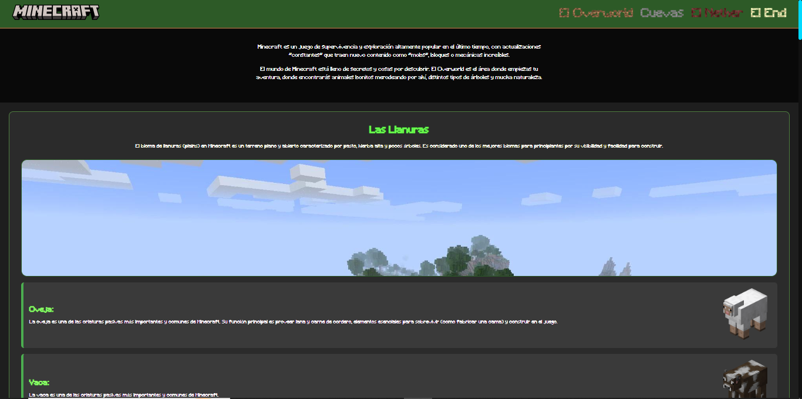
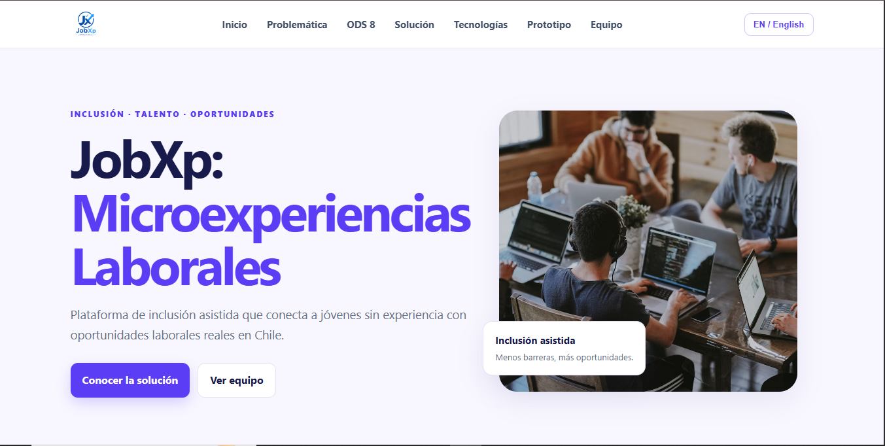

Hola, soy Benjamin, pero me dicen Tommy
Soy un chico al que le encantan los videojuegos y la programación, aunque caiga en ira porque el CSS o el JS no agarran y me demore horas solo para descubrir que estaban mal escritos jejeje...
Sere un programador front-end certificado, manejare bastante bien todo lo que se refiera a front-end (html, css, js, etc) porque sere catalogado como desarrollador junior.
ODIO CSS, POR MI QUE BORREN ESA MADRE.
Mis Stats de Habilidades
HTML 79%
CSS 39%
JavaScript 83%
Bootstrap 50%
MySQL 43%
Python 15%
(Python muy básico y un poquito más en Ren'Py)
MIS PROYECTOS
aqui podras ver todos los proyctos y/o recreaciones que me gustaron como quedaron
JobXP
JobXP es una plataforma de micro experiencias laborales en donde, en escencia, consigues experiencia laboral en base a micro trabajos que pueden durar unos dias hasta meses, pero no mas que eso.
integrantes
-Benjamin Pardo
-Ignacio Orellana
-Estefano Poblete
-Alan Sepulveda
-Matias Santelices

link al proyectoPagina de Minecraft (informativa)
Un proyecto grupal en donde participe con la coneptualizacion y el contenido de la misma.
integrantes
-Benjamin Pardo
-Ignacio Orellana
-Beatriz Dominges
-Axel Escobar

link al proyecto